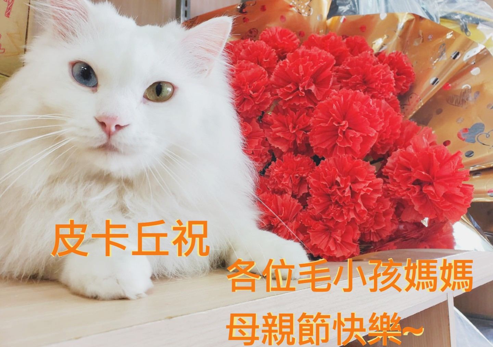

收容所大小事
(文章資料來源: fb的新竹縣動物行動派)
愛護動物觀念應從教育著手， 本所於本週六(109年11月21日)與新竹縣竹北社區大學、 財團法人建蓁環境教育基金會及社團法人新竹縣流浪動物珍愛協會合作辦理 「養成狗狗好習慣-牽引篇」動物保護教育課程， 邀請超越訓犬學校專業教練賴連盟及陳聖慧，教導縣民如何判斷犬隻肢體語言， 正確與犬隻互動方法，安全地牽引犬隻出外散步。另出門在外若遇到攻擊性陌生犬隻， 如何有效判斷並避免被攻擊，也是課程教學中重要的一環！
現本縣動物收容所內有許多熱心志工會安排帶收容犬隻出籠散步， 但如何與第一次見面的陌生犬隻安全互動，也是志工活動中非常重要的一環； 犬隻攻擊行為問題，很多案例是起源於被害人無法分辨出犬隻肢體動作示警行為， 當超過犬隻壓力負荷閾值時，即有可能出現進一步的攻擊行為。本所期待藉由本課程， 讓大眾更能理解犬隻的行為語言，與飼養的寵物建立正面良好的關係， 提升飼主責任並從養狗中得到樂趣！
